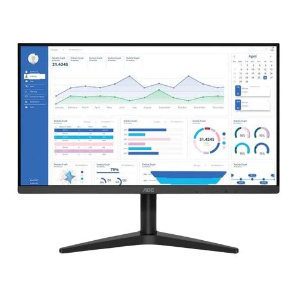

Monitor Aoc Sniper
Utilizo como monitor principal.
Recomendo bastante, pois as cores são bem vivas e o painel IPS é impecavel
Polegadas: 27
Hertz: 75
1ms

Monitor Aoc B1
Utilizo como monitor secundário.
Não recomendo para monitor principal, mas para secundário está perfeito.
Polegadas: 21,5
Hertz: 75
5ms
Teclado Redragon Fizz Lunar White
Teclado 60% o melhor que já tive, recomendo bastante, ainda mais se você for trocar os switches.
Switch: Brown
Modelo: K617-RGB-W
Mouse Logitech G203
Mouse perfeito para mim, para quem tem a pegada finger, porém, se você não se importar com luizinha te recomendo a pegar o g303.
Cor: Branco
Modelo: G203 RGB LIGHTSYNC
Mousepad Genérico do AliExpress
Não tive problema com o mousepad e recomendo comprar pelo AliExpress
Tamanho: 900x400
Expessura: 3cm
Imagem meramente ilustrativa
PC
Pc que eu jogo friv no ultra üòé
Processador: Athlon 3000g 3,50 Ghz
Placa de vídeo: Radeon Vega 3
Placa Mãe: Gigabyte A520m
RAM: 8 GB 3200mhz
SSD: 240GB Kingston
HD: 1TB Não lembro a marca :)
Notebook
Notebook que eu utilizo para trabalhar fora de casa.
Processador: Ryzen 5 3500U 3,7GHz
Placa de vídeo: Radeon™ Vega 8 Graphics
Placa Mãe: Num zei :)
RAM: 8 GB 2666MHz
SSD: 240GB
Marca: Asus
Cadeira Husky Storm
Muito boa, só a roda que suja bastante.
Cor: Preta e Branca